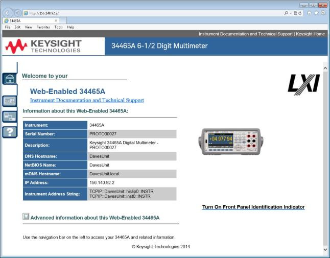
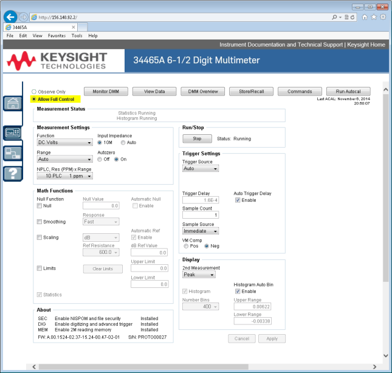
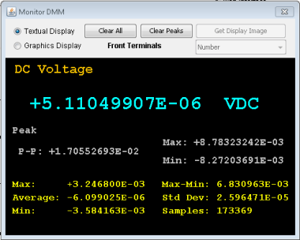
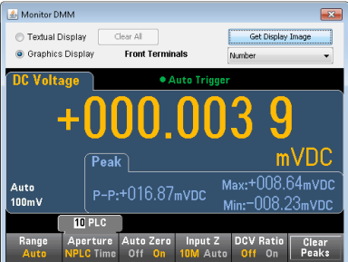
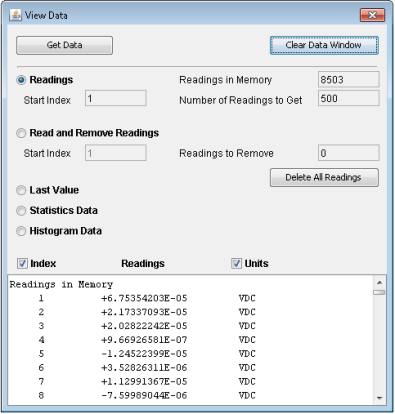
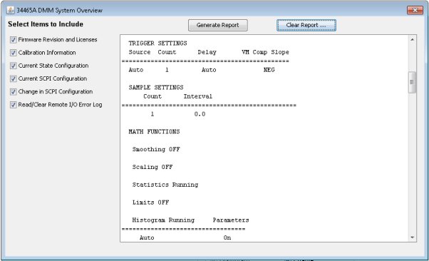
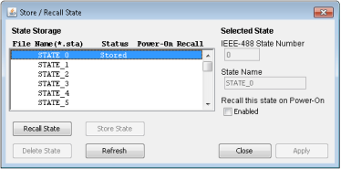
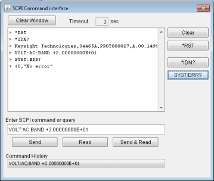
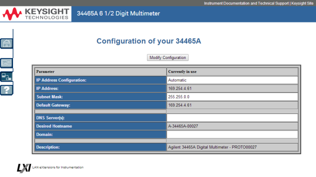
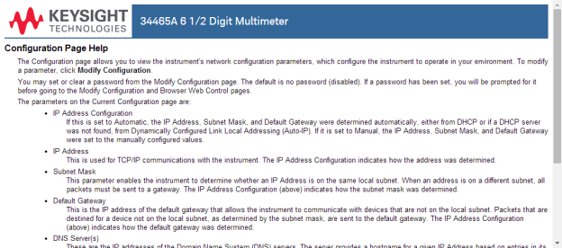

The following is a high-level overview of the four Web Interface tabs shown on the left side of the Web Interface window. When using the Web Interface, click the help button for detailed information on any page, for example:
The following is a high-level overview of the four Web Interface tabs shown on the left side of the Web Interface window. When using the Web Interface, click the help button for detailed information on any page, for example:The Keysight Truevolt Series DMMs include a built-in Web Interface for monitoring and controlling the instrument via a Web browser. To begin, connect your instrument to the LAN and enter the instrument's IP address into the address bar at the top of your PC's Web browser, or select the instrument in Connection Expert and click the Instrument Web Interface... button. The Web Interface will appear in the browser as shown below (34465A DMM shown).
The following is a high-level overview of the four Web Interface tabs shown on the left side of the Web Interface window. When using the Web Interface, click the help button for detailed information on any page, for example:
The Welcome Page displays basic instrument information. To change any of the information displayed on this page, use the Configuration Page .

This page allows you to monitor and control the DMM. This page opens in the Observe Only mode and automatically opens the Monitor DMM window (described below). In Observe Only mode, the instrument control settings are grayed out (disabled). This mode allows you to keep track of DMM operations remotely. The About section shows installed licenses, the instrument firmware revision, and the instrument serial number.
In Allow Full Control mode, this window configures the instrument and takes measurements. Simply select the DMM settings and click Apply.
.

The six buttons along the top of the screen are described below.
When the main page is set to Observe Only mode, this window opens showing a textual display of DMM readings, secondary measurements (if enabled), and statistics. In Allow Full Control mode, the Clear All and, if applicable, Clear Peaks buttons become active:

In Allow Full Control mode, to view data as shown on the instrument's graphical display (trend chart, histogram, and so on), click the Graphics Display radio button and click Get Display Image to update the graphical display:

For both the Observe Only and Allow Full Control modes, this window keeps a running display of Readings in Memory and has these active controls:
For the Allow Full Control mode, this window has these additional controls:

This window generates reports with information such as the instrument's firmware, configuration, calibration, SCPI configuration, and error queue. Check the desired boxes on the left side of the screen and then click Generate Report. The Change in SCPI Configuration box produces a list of all of the SCPI commands required to change the instrument state since the last time a report was generated. This provides a convenient way for you to learn SCPI syntax.

In the Allow Full Control mode, this window saves, recalls, and deletes instrument states.

In the Allow Full Control mode, this window lets you interactively send commands to the DMM and read responses. You can use this to become familiar with the instrument's command set, and to rapidly prototype commands and check responses before writing code. Buttons on the right side of the window send a Device Clear, *RST, or send and read *IDN? or SYST:ERR?.
Use the Enter SCPI command or query field to enter SCPI commands and click Send,to execute the command, Read to read back a response, or Send & Read to execute the command and read back the response.

In the Allow Full Control mode, click the Run Autocal button to perform an autocalibration (autocal). During the autocal, this button is grayed-out until the autocal is complete (typically 15 to 20 seconds).
The Configuration page allows you to view the instrument's network configuration parameters, which configure the instrument to operate in your environment. To modify a parameter, click Modify Configuration.

Help is available for each of the tabs described above. For example:
